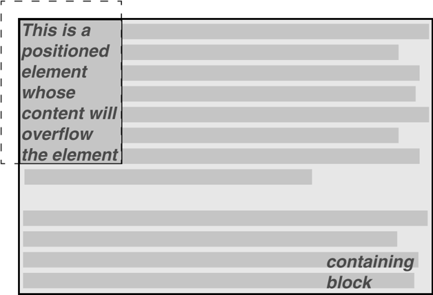

CSS权威指南（3rd）笔记-查缺补漏5 - 定位
定位的原理很简单。利用定位，可以准确地定义元素框相对于其正常位置应该出现在哪里，或者相对于父元素、另一个元素甚至浏览器窗口本身的位置。
基本概念
深入讨论各种定位之前，最好先来了解有哪些类型的定位，以及这些不同类型之间有什么区别。我们还要对一些基本思想给出定义，这些思想是理解定位如何工作的基础。
定位的类型
通过使用position属性，可以选择4种不同类型的定位，这会影响元素框生成的方式。
- 值：static | relative | absolute | fixed | inherit
- 初始值：static
- 应用于：所有元素
position值的含义如下：
- static
元素框正常生成，块级元素生成一个矩形框，作为文档流的一部分，行内元素则会创建一个或多个行框，置于其父元素中， - relative
元素框偏移某个距离。元素仍保持其未定位前的形状，它原本所占的空间仍保留。 - absolute
元素框从文档流完全删除，并相对于其包含块定位，包含块可能是文档中的另一个元素或者是初始包含块（见后面的介绍）。元素原先在正常文档流中所占的空间会关闭，就好像该元素原来不存在一样。元素定位后生成一个块级框，而不论原来它在正常流中生成何种类型的框。 - fixed
元素框的表现类似于将position设置为absolute，不过其包含块是视窗本身。
包含块
对于浮动元素，其包含块定义为最近的块级祖先元素。对于定位，情况则没有这么简单。CSS2.1定义了以下行为：
- “根元素”的包含块（也称为初始包含块）由用户代理建立，在HTML中，根元素就是html元素，不过有些浏览器会使用body作为根元素。在大多数浏览器中，初始包含块是一个视窗大小的矩形。
- 对于一个非根元素，如果其position值是relative或static，包含块则由最近的块级框、表单元格或行内块祖先框的内容边界构成。
- 对于一个非根元素，如果其position值是absolute，包含块设置为最近的position值不是static的祖先元素（可以是任何类型）。这个过程如下：
- 如果这个祖先是块级元素，包含块则设置为该元素的内边距边界，换句话说，就是由边框界定的区域。
- 如果这个祖先是行内元素，包含块则设置为该祖先元素的内容边界。在从左向右读的语言中，包含块的上边界和左边界是该祖先元素中第一个框内容区的上边界和左边界，包含块的下边界和右边界是最后一个框内容区的下边界和右边界。在从右向左读的语言中，包含块的右边界对应于第一个框的右内容边界，包含块的左边界则取自最后一个框的左内容边界。上下边界也是一样。
- 如果没有祖先，元素的包含块定义为初始包含块。
这里有一点很重要：元素可以定位到其包含块的外面。这与浮动元素使用负外边距浮动到其父元素内容区外面很类似。这也说明，“包含块”一词实际上应该是“定位上下文”，不过，由于规范使用的是“包含块’所以我也沿用了这个说法（我已经在尽力减少由此带来的误解，真的！）。
偏移属性
上一节介绍的三种定位机制使用了4个属性来描述定位元素各边相对于其包含块的偏移。我们将这4个属性称为偏移属性，这对于完成定位是很重要的一部分。
top、right、bottom、left
- 值：
<length>| <percentage> | auto | inherit - 初始值：auto
- 应用于：定位元素（也就是position值不是static的元素）
- 继承性：无
- 百分数：对于top和bottom，相对于包含块的高度；对于right和left，相对于包含块的宽度
- 计算值：对于相对定位元素，见以下说明，对于static元素为auto，对于长度值，是相应的绝对长度；对于百分数值，则为指定的值；否则为 auto
- 说明：计算值取决于一系列因素
这些属性描述了距离包含块最近边的偏移（所以得名offset）。例如，top描述了定位元素上外边距边界离其包含块的顶端多远。如果top为正值，会把定位元素的上外边距边界下移，若为负值，则会把定位元素的上外边距移到其包含块的顶端之上。类似地，left描述了定位元素的左外边距边界在其包含块左边界右边（正值）或左边（负值）有多远。如果是正值，会把定位元素的外边距边界移到包含块左边界右边，而负值则将其移到包含块左边界左边。
还可以这样来讲，正值会导致向内偏移，使边界朝着包含块的中心移动，而负值会导致向外偏移。
偏移定位元素的外边距边界时，带来的影响是元素的所有一切（包_括外边距，边框、内边距和内容）都会在定位的过程中移动。因此，可以为定位元素设置外边距、边框和内边距，这些会随着定位元素一直保留，并包含在偏移属性定义的区域内。
要记住重要的一点，偏移属性定义了距离包含块相应边的偏移（例如，left定义了距离包含块左边的偏移），而不是距包含块左上角的偏移。正是因为这个原因，填充一个包含块的右下角时要使用以下值：top: 50%; bottom: 0; left: 50%; right: 0;
在这个例子中，定位元素的左外边界放在包含块中间的位置上，这是距包含块左边界的偏移。不过，定位元素的右外边界没有从包含块的右边界偏移，所以二者不矛盾。定位元素的顶端和底端也是如此：外上边界放在包含块中间的位置上，但是外下边界没有从包含块底端上移。这就得到了如下图所示的结果。
注意：在上图以及本章大多数例子中，都是基于绝对定位的，由于绝对定位对于展示top、right、bottom和left如何工作是最简单的机制，所以我们一直都会用绝对定位。
需要说明，定位元素的背景色稍有不同。上图中没有外边距，但是如果确实有外边距，在边框和偏移边界之间就会出现空白。看上去就好像定位元素没有完全填充包含块右下方1/4部分一样。实际上，它确实填满了这个区域，不过人眼不能直接看出。因此，以下两组样式会得到几乎相同的外观效果，假设包含块为100em高，100em宽：1
2top: 50%; bottom: 0; left: 50%; right: 0; margin: 10em;
top: 60%; bottom: 10%; left: 60%; right: 10%; margin: 0;
重申一句，二者只是在视觉效果上相似。
通过使用负值，可以将一个元素定位到其包含块之外，例如，指定以下值会得到如图10-27所示的结果：top:-5em; bottom: 50%; left: 75%; right:-3em;
除了长度值和百分数值，偏移属性还可以设置为auto，这是默认值。对于auto没有定义行为，它会根据所用的定位类型改变。
宽度和高度
很多情况下，如果已经确定将元素定位到哪里，接下来可能希望声明该元素应当有多高、多宽。另外，有时你可能想限制一个定位元素的高度和宽度，还有一些情况下也许你希望浏览器自动地计算宽度或高度（或者宽度和高度都由浏览器自动计算）。
设置宽度和高度
如果想为定位元素指定一个特定的宽度，显然要用width属性。类似地，利用height 可以为定位元素声明特定的高度。
尽管有时设置一个元素的宽度和高度很重要，但对于定位元素来说则不一定必要。例如，如果使用top. right, bottom和left来描述元素4个边的放置位置，那么元素的高度和宽度将由这些偏移隐含确定。假设你希望一个绝对定位元素从上到下填充其包含块的左半部分，可以使用以下值，其结果见下图所示：top: 0; bottom: 0; left: 0; right: 50%;
由于width和height的默认值都是auto，上图所示的结果就好像使用了以下值一样：top: 0; bottom: 0; left: 0; right: 50%; width: 50%; height: 100%;
这个例子中尽管出现了Width和height，但它们对元素的布局没有任何作用。
当然，倘若向元素增加了外边距、边框或内边距，此时如果为height和width显式指定了值，情况就不同了：top: 0; bottom: 0; left: 0; right: 50%; width: 50%; height: 100%; padding: 2em;
这会使定位元素延伸超出其包含块，如下图所示。
之所以会发生这种情况，原因在于向内容区增加了内边距，而且内容区的大小由height和width的值确定。要得到你想要的内边距，而且仍保证元素不超出其包含块，可以去除height和width声明，或者显式地将其设置为auto。
限制宽度和高度
最小最大属性的一个很大的好处是，可以相对安全地混合使用不同的单位。使用百分数大小的同时，可以设置基于长度的限制，反之亦然。
需要指出，这些最小最大属性结合浮动元素使用时可能也非常有用。例如，可以允许一个浮动元素的宽度相对于其父元素（即其包含块）的宽度，同时确保该浮动元素的窀度不小于10em，反过来使用也是可以的：p.aside {float: left; width: 40em; max-width: 40%;}
这会把浮动元素设置为40em宽，除非这超过了包含块宽度的40%，在这种情况下浮动元素会变窄。
内容剪裁
如果一个绝对定位元素的内容溢出其内容框，而且overflow设置为要求剪裁该内容，通过使用属性clip可以改变剪裁区域的形状。
默认值auto表示元素的内容不应剪裁。还可以相对于元素内容区定义一个剪裁形状。这不会改变内容区的形状，而只是改变将显示内容的区域形状。
clip
- 值：rect(top,right, bottom,left) | auto | inherit
- 初始值：auto
- 应用于：绝对定位元素（在CSS2中，clip应用于块级元素和替换元素）
- 继承性：无
- 计算值：对于矩形，4个计算长度表示剪裁矩形区域的4个边，否则，根据指定确定
这是利用形状值rect实现的。可以如下指定剪裁区域内不做修改：clip: recc(0, auto, auto, 0)
rect的语法很有意思。从技术上讲，可以是rect(top, right, bottom, left)，注意这里的逗号，不过CSS2规范提供的例子中有些有逗号，有些没有逗号，而且将rect定义为这两种版本都能接受。在此，我们还是采用有逗号的版本，主要是因为这样更好读，而且这是CSS2.1中推荐的做法。
有一点极为重要，rect(…）的值不是边偏移，而是距元素左上角的距离（在从右向左读的语言中，则是与元素右上角的距离）。因此，如果一个剪裁矩形涵盖元素左上角20 x 20像素的一个正方形，可以定义如下：rect(0, 20px, 20px, 0)
rect (…)只允许长度值和auto，如果设置为auto，这相当于将剪裁边界设置为适当的内容边界。因此，以下两个语句含义相同：1
2clip: rect(auto, auto, 10px, 1em);
clip: rect(0, 0, 10px, 1em);
由于clip中的所有偏移都是距左上角的偏移，所以不允许有百分数，实际上不可能创建一个“中心”剪裁区域，除非你知道元素本身的大小。考虑以下情况：div#sidebar {position: absolute; top: 0; bottom: 50%; right: 50%; left: 0; clip: rect(1em,4em,6em,1em);}
由于无法知道元素会有多高或多宽，所以无法定义这样一个剪裁矩形，要求它最后在元素内容区向右1em或向下1em处。要想知道元素的大小，唯一的办法就是设置元素本身的高度和宽度：div#sidebar {position: absolute; top: 0; left: 0; width: 5em; height: 7em; clip: rect(1em,4em,6em,1em);}
这会得到如下图所示的结果，这里增加了一个虚线表示剪裁区域的边界。这条线在显示文档的用户代理中并不会真的出现。
不过，可以设置负长度值，这会使剪裁区域延伸到元素框之外。如果你想将剪裁区域向上向左移0.25英寸，可以使用以下样式（如下图所示）clip: rect(-0.25in, auto, auto,-0.25in);

可以看到，这没什么好处。尽管剪裁区域向上向左延伸了，不过由于延伸区域内没有任何内容，所以没有多大差别。
另一方面，完全可以超越下边界和右边界，但不能超越上边界或左边界。下图显示了以下样式的结果（要记住，这里的虚线只是为了说明，并不实际存在！）：div#sidebar {position: absolute; top: 0; left: 0; width: 5em; height: 7em; clip: rect(0,6em,9em,0);}
这会扩展可以看到内容的区域。不过，内容流并没有改变，所以唯一的视觉效果就是元素下面可以看到更多的内容。文本没有向右流，因为其行框的宽度仍受定位元素宽度的限制。如果有一个比定位元素宽的图像，或者有一个很长的预定义格式文本行，则可能在定位元素的右边也可见（直到剪栽区域结束的位置）。
你可能已经认识到，rect(…)的语法与CSS的其他语法相比不太一样。原因是它基于早期的定位草案，而该草案使用了左上偏移机制。在CSS2之前，实现这个语法的Internet Explorer巳经成为完备推荐，所以它与最终的rect (…)语法冲突，因为最后已经将rect(…)修改为使用边偏移（类似于CSS2的其余部分）。这么做是为了保证定位一致，这是合情合理的。
不过，等到这个时候已经太晚了：市场上已经有了具体实现，所以没有要求Microsoft修改浏览器（因为这可能破坏现有的页面），而是将标准修改为适应这个实现。遗憾的是，正如前面所看到的，这意味着如果高度和宽度没有明确定义，将无法设置一致的剪裁区域。
rect(…)只接受长度单位和auto，这使问题更为严重。要让百分数单位也成为合法的rect (…)值可能还有很长的一段路要走，也许将来的CSS版本会增加这个功能。
元素可见性
除了剪裁和溢出，还可以控制整个元素的可见性。
visibility
- 值：visible | hidden | collapse | inherit
- 初始值：visible
- 应用于：所有元素
这个属性相当简单。如果元素设置为有visibility: visible，当然它就是可见的。
如果元素设置为visibility: hidden，则会置为“不可见”（按规范中的说法），处于不可见状态时，元素还是会影响文档的布局，就好像它还可见一样。换句话说，元素还在那里，只不过你看不见它。注意这与display: none有区别。对于后者，元素不仅不显示，还会从文档中删除，所以对文档布局没有任何影响。
hidden元素中原本可见的部分（如内容、背景和边框）都会置为不可见。注意，这些空间还留在原处，因为元素仍是文档布局的一部分。只不过你看不到它。
还要注意，有可能将一个hidden元素的后代元素置为visible。这会使该后代元素正常出现，尽管其祖先元素（以及兄弟）是不可见的。为此，必须显式地声明后代元素为visible，因为visibility属性可以继承：1
2p.clear {visibility: hidden;}
p.clear era {visibility: visible;}
visibility: collapse值在CSS表显示中使用，这在下一章讨论。根据CSS2规范，如果用干非表元素，collapse与hidden含义相同。
绝对定位元素的放置和大小
把“放置”和“大小”这两个概念放在一起看上去有些奇怪，不过对于绝对定位元素来
说，这是必要的，因为规范把它们紧密地绑在一起。如果仔细考虑，这也不那么奇怪。请考虑如果一个元素使用4个偏移属性来定位会发生什么情况，如下：1
2
3
4
5
6
7
8
9
10#masthead h1 {
position: absolute;
top: 1em;
left: 1em;
right: 25%;
bottom: 10px;
margin: 0;
padding: 0;
background: silver;
}
在此，h1元素框的高度和宽度由其外边距边界的放置决定，如果包含块更高，那么h1也会更高；如果包含块更窄，h1也会跟着更窄。如果向h1 增加外边距或内边距，这会对h1的高度和宽度计算值有进一步的影响。
但是这样做之后，再试图设置一个显式的高度和宽度会怎么样呢？1
2
3
4
5
6
7
8
9
10
11
12#masthead h1 {
position: absolute;
top: 0;
left: 1em;
right: 10%;
bottom: 0;
margin: 0;
padding: 0;
height: 1em;
width: 50%;
background: silver;
}
必须做些工作，因为所有这些值都正确是不太可能的。实际上，包含块宽度必须是h1的 font-size计算值的2.5倍，这样以上的值才能正确。如果是其他宽度，则说明至少有一个值是错误的，相应地必须将其忽略。到底哪一个值是错误的，这取决于很多因素，而且根据元素是替换元素还是非替换元素还会有所不同。
为此考虑以下规则：#masthead h1 {position: absolute; top: auto; left: auto;}
结果会是什么呢？可以看到，答案并不是“将值重置为0”。
自动边偏移
元素绝对定位时，如果除bottom外某个任意偏移属性设置为auto，会有一种特殊的行为。下面以top为例，考虑以下标记：1
2
3
4
5<p>
When we consider Che effect of positioning, it quickly becomes clear that authors
can do a great deal of damage to layout, just as they can do very interesting
things.<span style="position: absolute; top: auto; left: 0;">[4]</span> This is usually the case with useful technologies: the sword always has at least two edges, both of them sharp.
</P>
会发生什么呢？对于left，很简单：元素的左边界会相对于其包含块的左边界放置（可以假设其包含块是初始包含块）。不过，对于top，还会发生一些更有意思的事情。定位元素的顶端要相对于其未定位前本来的顶端位置对齐。换句话说，假设span的 position值为static，想象一下它会放在哪里，这就是其静态位置，也就是计算出的其顶边应在的位置。
CSS2.1这样描述：
……（元素的）“静态位置”一词大致含义是：元素在正常流中原本的位置。更确切地讲，“顶端”的静态位置是从包含块的上边界到假想框的上外边距边界之间的距离（假想框是假设元素“position”属性为“static”时元素的第一个框）。如果这个假想的元素框在包含块的上面，则这个值为负。
因此，可以得到如下图所示的结果，
“[4]”位于段落内容之外，因为初始包含块的左边界在该段落左边界的左边。
如果left和right设置为auto，也适用同样的基本规则。在这些情况下，定位元素的左（或右）边界与元素未定位时该边界原本的位置对齐。下面修改前面的例子，使top 和left都设置为auto:1
2
3
4
5<P>
When we consider the effect of positioning, it quickly becomes clear that
can. do a great deal of damage to layout, just as they can do very interesting
things.<span style="position: absolute; top: auto; left: auto;">[4]</span> This is usually the case with useful technologies: the sword always has at least two edges, both of them sharp.
</P>
“[4]”现在就位于其本来位置（即未定位前的位置）。注意，由于它已经定位，其正常流空间关闭。这会导致定位元素与正常流内容重叠。
注意：应该注意到，CSS2和CSS2.1都指出在这样的情况下，……用户代理可以自由猜测可能的[静态]位置。当前浏览器在这方面做得很好，会按要求处理top和left的auto值，使元素的位置与其在正常流中原本的位置一致。
这种自动放置只在某些情况下可行，这些情况下通常对定位元素的其他尺寸没有什么限制。前面的例子可以自动放置，因为它对其高度或宽度没有任何限制，对下边界和右边界的放置也没有限制。不过，假设出于某种原因确实有这样一些限制会怎么样呢？请考虑以下标记：1
2
3
4
5
6<p>
When we consider the effect of positioning, it' quickly becomes clear that authors
can do a great deal of damage to layout, just as they can do very interesting
things.<span style="position: absolute; top: auto; left: auto; right: 0; bottom: 0; height: 2em; width: 5em;">[4]</span> This is usually the case with
useful technologies: the sword always has at least two edges, both of them sharp.
</P>
此时无法满足以上的全部值。要确定此时会发生什么，这是下一节要讨论的问题。
非替换元素的放置和大小
一般地，元素的大小和位置取决于其包含块。各个属性（width、right、padding-left 等）的值也会有一些影响，不过最主要的还是其包含块。
考虑一个定位元素的宽度和水平放置。这可以表示为一个等式：left + margin-left + border-left-width + padding-left + width + padding-right + border-right-width + margin-right + right = 包含块的width
这个计算是很合理的。基本上会由这个等式来确定正常流中块级元素的大小，除非增加了left和right。所有这些属性之间有什么关系呢？以下是一组规则。
首先，如果left、width和right都设置为auto，会得到上一节所示的结果：左边界置于其静态位置（假设使用从左向右读的语言）。在从右向左读的语言中，则是右边界置于其静态位置。元素的width设置为“收放得正好合适”，这说明该元素的内容区宽度恰好只能包含其内容（而没有多余空间）。这与表单元格的行为很类似。非静态位置属性要适当设置，以保证余下的距离。例如：1
2
3
4<div style="position: relative; width: 25em; border: 1px dotted;">
An absolutely positioned element can have its content
<span style="position: absolute; top: 0; left: 0; right: auto; width:auto; background: silver;">shrink-wrapped</span> thanks to the way positioning rules work.
</div>
元素的顶端根据其包含块的顶端放置，且元素的宽度刚好足够包含内容。从元素右边界到包含块右边界之间余下的距离则是right的计算值。
假设左右外边距都设置为auto，而left、width和right不是auto，如下例所示：1
2
3<div style="position: relative; width: 25em; border: 1px dotted;">
An absolutely positioned element can have its content
<span style="position: absolute; top: 0; left: 1em; right: 1em; width: l0em; margin: 0 auto; background: silver;">shrink-wrapped</span> thanks to the way positioning rules work.
按书上说的：此时，左右外边距会设置为相等的值。这实际上会让元素居中，如下图所示。
这与正常流中的auto外边距居中行为基本上是一样的。
而实际上上例在W3C的最新模型下是错误的，absolute定位元素会忽略margin，结果为拉伸span的宽度
所以，假设外边距不为auto:1
2
3
4
5<div style="position: relative; width: 25em; border: 1px dotted;">
An absolutely positioned element can have its content
<span style="position: absolute; top: 0; left: 1em; right: 1em; width: 10em;
margin-left: 1em; margin-right: 1em; background: silver;">shrink-wrapped</span> thanks Co the way positioning rules work.
</div>
现在就有问题了。定位元素span的属性只增加为14em，而包含块宽度为25em。这里有11em的差额，必须从某个地方弥补。
规则指出，在这种情况下，用户代理会忽略right的值，并重置right的值。换句话说，其结果就好像声明了以下规则一样：1
<span style="position: absolute; top: 0; left: 1em; right: 12em; width: 10em; margin-left: 1em; margin-right: 1em; background: silver;">shrink-wrapped</span>
其结果如下图所示
如果某个外边距保持为auto，则会改变这个外边距。假设将样式改为：1
<span style="position: absolute; top: 0; left: 1em; right: 1em; width: 10em; margin-left: 1em; margin-right: auto; background: silver;">shrink-wrapped</span>
视觉效果与上图所示相同，只不过这是通过将右外边距重新计算为12em得到的，而不是覆盖为属性right指定的值。
另一方面，如果将左外边距置为auto，则会重置左外边距，如下图所示：
一般地，如果只有一个属性设置为auto，就会修改这个属性来满足本节前面给出的等式。给定以下样式，元素会延伸到必要的宽度，而不是“收缩”内容：1
<span style="position: absolute; top: 0; left: 1em; right: 1em; width: 10em; margin-left: auto; margin-right: 1em; background: silver;">shrink-wrapped</span>
到目前为止，我们实际上只考虑了水平轴的行为，不过对于垂直轴，规则非常类似。还是看前面的讨论，只要将其旋转90度就会得到几乎相同的行为。
上述几个示例的实际效果：
See the Pen 非替换元素的放置和大小 by XmoyKing (@xmoyking) on CodePen.
替换元素的放置和大小
非替换元素和替换元素的定位规则大不相同。这是因为替换元素有固有的高度和宽度，因此其大小不会改变，除非创作人员有意显式地修改。因此，在替换元素定位中没有“恰当收放”行为的概念。
确定替换元素位置和大小时，所涉及的行为用以下规则描述最为容易，这组规则按顺序分别：
- 如果width设置为auto，width的实际使用值由元素内容的固有宽度决定。因此，如果一个图像的宽度是50像素，使用值则计算为50px。如果显式声明了width （也就是说，设置为100px或50%），则width设置为该值。
- 在从左向右读的语言中，如果left值为auto，要把auto替换为静态位置。在从右向左读的语言中，则把right的auto值替换为静态位置。
- 如果left或right仍为auto（也就是说，未在上一步中被替换），则将margin-left 或margin-right的auto值替换为0。
- 如果此时margin-left和margin-right都还定义为auto，则把它们设置为相等的值，从而将元素在其包含块中居中。
- 在此之后，如果只剰下一个auto值，则将其修改为等于等式的余下部分（使等式满足）。
这与非替换元素绝对定位时的基本行为相同（只要假设非替换元素有一个显式的宽度）。因此，下面两个元素会有相同的宽度和位置，假设图像的固有宽度是100像素（见下图）:1
2
3
4<div style="width: 200px; height: 50px; border: 1px dotted gray;">
<img src="frown.gif" alt="a frowny face" style="position: absolute; top: 0; left: 50px; margin: 0;">
<div style="position: absolute; top: 0; left: 50px; width: lOOpx; height: 100px; margin: 0;"> it's a div! </div>
</div>
与非替换元素一样，如果值过度受限，用户代理就会忽略right的值（对于从左向右读的语言），而在从右向左读的语言中会忽略left的值。因此，在以下例子中，right的声明值会被计算值50px覆盖：1
2<div style="position: relative; width: 300px;">
<img src="frown.gif" alt="a frowny face" style="position: absolute; top: 0; left: 50px; right: 125px; width: 200px; margin: 0;">
类似地，沿垂直轴的布局受以下规则控制：
- 如果height设置为auto, height的计算值由元素内容的固有高度确定。因此，对于一个50像素高的图像，其height计算为50px。如果height显式声明为某个值（如1OOpx或50px，则height会设置为该值）。
- 如果top的值为auto，将其替换为替换元素的静态位置。
- 如果bottom的值为auto，将margin-top或margin-bottom的所有auto值替换为0。
- 如果此时margin-top和margin-bottom都还定义为auto，将其设置为相等的值，从而使元素在其包含块中居中。
- 在此之后，如果仅剩下一个auto值，则将其修改为等于等式中的余下部分（使等式满足）。
- 与非替换元素一样，如果值过度受限，用户代理会忽略bottom。
因此，以下标记会得到如下图所示的结果：1
2
3
4
5
6
7<div style="position: relative; height: 200px; width: 200px; border: 1px solid;">
<img src="one.gi£" alt="one" widths"25" heights"25" style="position: absolute; top: 0; left: 0; margin: 0;">
<img src="two.gif" alt="two" width="25" style="position: absolute; top: 0; left: 60px; margin: 10px 0; bottom: 4377px;">
<img src="three.gif" alt="three" height="25" style="posxtion: absolute; left: 0; width: lOOpx; margin: 10px; bottom: 0;">
<img src="four.gif" alc=" four" style="position: absolute; top: 0; height: lOOpx; right: 0; width: 50px;">
<img src="five.gif" alt="five" style:"position: absolute; top: 0; left: 0; bottom: 0; right: 0; margin: auto;">
</div>
Z轴上的放置
- 值：
<integer> | auto | inherit - 初始值：auto
- 应用于：定位元素
所有整数都可以用作为z-index的值，包括负数。如果为元素指定一个负z-index值，会将其移到到离读者更远的位置。也就是说，它会移到叠放栈的更低层。
为一个元素指定了z-index值，该元素就会建立自己的局部叠放上下文。这意味着，元素的所有后代相对于该祖先元素都有其自己的叠放顺序。这非常类似于元素建立新包含块的方式。1
2
3
4
5
6
7
8
9
10p {border: 1px solid; background:#DDD; margin: 0;}
b {background:#808080;}
em {background:#BBB;}
#one {position: absolute; top: 0; left: 0; width: 50%; height: 10em; z-index: 10;}
#two {position: absolute; top: 5em; left: 25%; width: 50%; height: 10em; z-index: 7;}
#three {position: absolute; top: 5em; left: 0; widtrh: 50%; height: 10em; z-index: 1;}
#one b {position: absolute; right:-5em; top: 4em; width: 20em; z-index: -404;}
#two b {position: absolute; right:-3em; top: auto; z-index: 36;}
#two em {position: absolute; bottom:-0.75em; left: 7em; right:-2em; z-index:-42;}
#three b {position: absolute; left: 3em; top: 3.5em; width: 25em; z-index: 23;}
注意b和em元素在叠放顺序中的位置。当然，这些元素都相对于其父元素准确定位，不过，要特别注意p#two的子元素。尽管b元素在其父元素前面，而em在后面，但它们都在p#three的前面！这是因为z-index值36和-42都相对于p#two，而不是相对于总的文档。从某种意义上讲，p#two及其所有子元素都有共同的z-index值7，而在这个P#two上下文中各元素又有其自己的“次级”z-index。
换句话说，就好像b元素的z-index为7,36，而em的z-index值为7,-42，这些只是反映概念值，规范中没有相应的规定。不过，这样的系统有助于说明如何确定总的迭放顺序。请考虑：
p#one 10
p#one b 10,-404
p#two b 7,36
p#two 7
p#two em 7,-42
p#three b 1,23
p#three 1
这个概念框架准确地描述了这些元素以何种顺序叠放。从这个叠放顺序来看，尽管一个元素的后代可能在该元素的上面或下面，但它们与其祖先元素都归为一组。
如果一个元素为其后代元素建立了叠放上下文，而且该元素位于此上下文z轴的0位置上，也是如此。因此，可以将框架扩展如下：
p#one 10,0
p#one b 10,-404
P#two b 7,36
P#two 7,0
P#two em 7,-42
p#three b 1,23
p#three 1,0
还有一个值要分析。规范对默认值auto有以下说明：
当前叠放上下文中生成框的栈层次与其父框的层次相同。这个框不会建立新的局部叠放上下文。(CSS2.1: 9.9.1)
因此，如果元素设置为z-index: auto，可以将其处理为z-index: 0。不过现在你可能想知道，如果一个元素是初始包含块叠放上下文的一部分，而且其z-index值为负，此时会发生什么情况。例如，可以想想看以下规则会得到什么结果：1
2
3<body>
<p style="position: absolute; z-index:-1;">Where am I?</p>
</body>
根据叠放规则，body元素与其父元素框在同一个迭放上下文中，因此将是0。它不会建立一个新的叠放上下文，所以绝对定位的P元素与body元素置于相同的迭放上下文中（即初始包含块的叠放上下文）。换句话说，段落放在body元素的后面（被body元素盖住）。如果body有不透明的背景，这个段落会消失。
不过，只是CSS2中会如此。在CSS2.1中，叠放规则有所改变，要求元素绝对不会迭放在其叠放上下文的背景之下。换句话说，考虑以下情况，body元素为其后代建立了一个包含块（例如，假设它是相对定位元素）。作为body元素后代的一个绝对定位元素就不能叠放在body的背景之下，不过可以迭放在body的内容下面。
See the Pen Z轴上的放置 by XmoyKing (@xmoyking) on CodePen.
相对定位
理解起来最简单的定位机制就是相对定位。采用这种机制时，将通过使用偏移属性移动定位元素。不过，这可能有一些有意思的后果。
如果相对定位一个元素，它会立即为其所有子元素建立一个新的包含块。这个包含块对应于该元素原本所在的位置。
相对定位有一个有意思的小问题。如果一个相对定位元素过度受限会发生什么情况呢？例如：strong {position: relative; top: 10px; bottom: 20px;}
这里指定的值要求两种完全不同的行为。如果只考虑top: 10px，则元素应当向下移10像素，但bottom: 20px则要求元素应该向上移20像素。
原来的CSS2规范没有说明这种情况下会怎么做，不过CSS2.1指出，如果遇到过度受限的相对定位，一个值会重置为另一个值的相反数。因此，bottom总是等于-top。这意味着前面的例子会处理为就好像做了以下声明：strong {position: relative; top: 10px; bottom:-10px;}
因此，strong元素将向下移10像素。规范还允许不同的书写方向。在相对定位中，right总是等于-left （从左向右读的语言中），而在从右向左读的语言中则恰好相反，left总是等于-right.